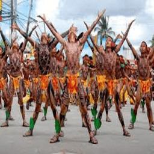

Dinagyang, a lively cultural festival in Iloilo City, Philippines, captivates spectators every fourth Sunday of January with vibrant street performances, showcasing rhythmic dances and colorful costumes that pay homage to the Santo Niño. Meanwhile, the Paraw Regatta, held annually in February, transforms Iloilo's waters into a thrilling spectacle of traditional sailboat races, highlighting the skillful maneuvering of local sailors and the region's maritime heritage. Together, these festivals not only celebrate the rich cultural tapestry of the community but also provide a platform for fostering unity and preserving the unique traditions of Iloilo. From the energetic beats of Dinagyang to the exhilarating sails of Paraw Regatta, these events offer a captivating glimpse into the cultural vitality of the region.
The Binanog Festival, celebrated in the municipality of Lambunao in Iloilo, is a vibrant showcase of indigenous culture and rhythmic traditions. This annual event, deeply rooted in the Panay-Bukidnon heritage, pays homage to the spirits of the mountains through a mesmerizing dance known as "binanog." Dancers adorned in colorful traditional attire, inspired by the native birds, gracefully move to the beat of ethnic drums and gongs, creating a visual and auditory feast for spectators.
The Pintados de Passi Festival is a vibrant and culturally rich celebration held annually in Passi City, Iloilo, showcasing the region's deep-rooted traditions. Highlighted by a colorful street dance competition, performers adorned in intricate body paint and tribal costumes mesmerize onlookers with their rhythmic movements and storytelling. The festival pays homage to the indigenous Pintados warriors, with the body paint symbolizing bravery and resilience. Alongside the captivating performances, visitors also indulge in local delicacies and witness various events that showcase the city's commitment to preserving its cultural heritage.
Iloilo City, renowned for its rich cultural heritage, has produced notable figures such as former Philippine President Manuel Roxas, acclaimed actress Angel Locsin, and distinguished writer Edilberto K. Tiempo. In interviews, individuals often express their admiration for Iloilo City's warm hospitality, delectable cuisine, and vibrant cultural events like Dinagyang and Paraw Regatta, highlighting the city's unique charm. Capturing the essence of these experiences, images showcase the genuine joy and happy faces of Iloilo's residents, providing a visual testament to the community's vibrant spirit and shared celebrations. Together, the famous personalities, positive testimonials, and cheerful imagery underscore Iloilo City's cultural significance and its impact on the lives of both its residents and visitors.